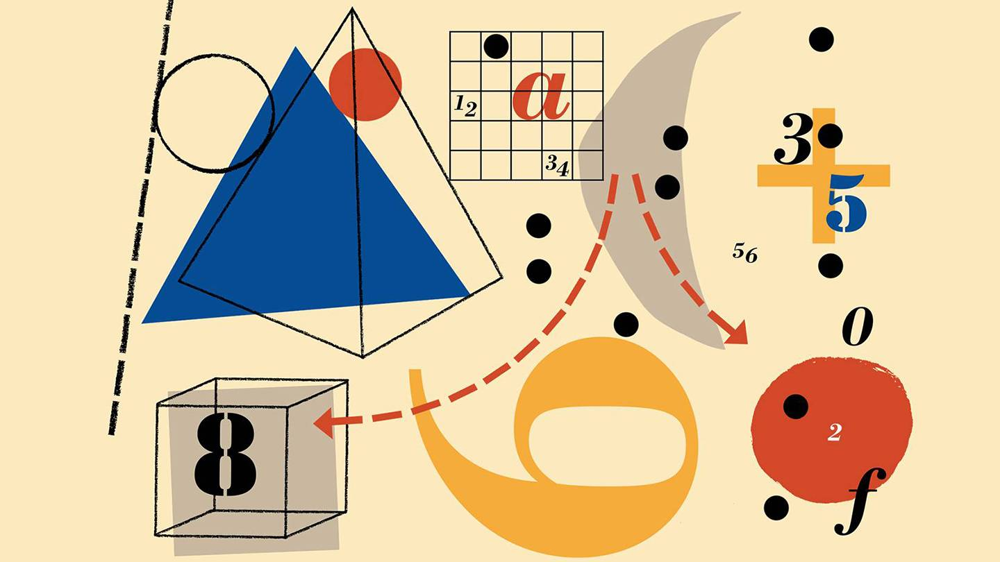

Education
-
M.S. in Mathematics
Texas A&M International University
May 2018
-
B.A. in Mathematics
Texas A&M International University
May 2015
Work History
-
Classroom Teacher
August 2019 - Present
-
Substitute Teacher
November 2018 - May 2019
-
University Math Instructor
July 2017 - July 2020
Skills
-
Able to effectively communicate complex subject matter.
-
Strong logical and mathematics skills.
-
Familiar with Java programing.